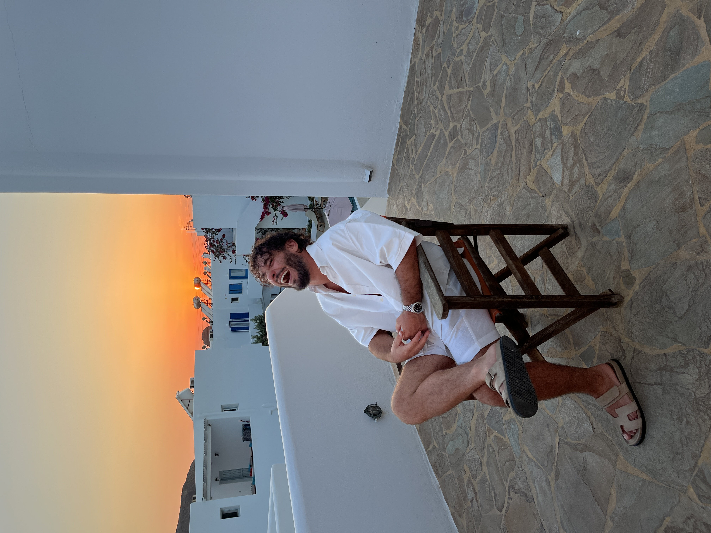
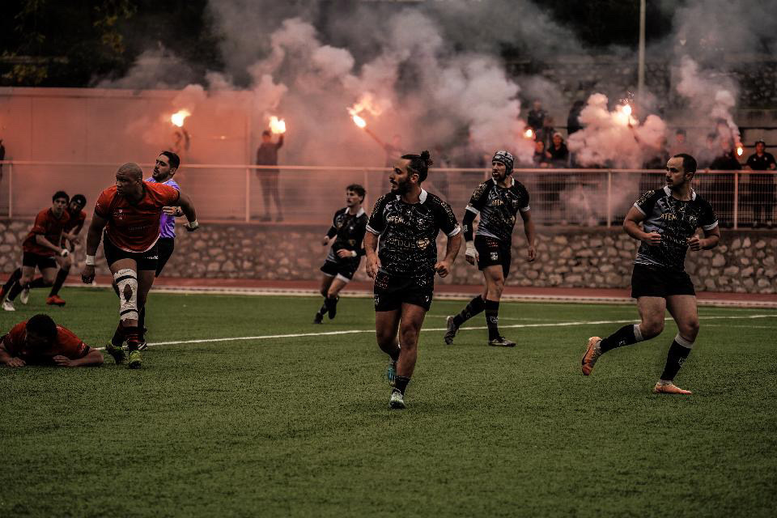
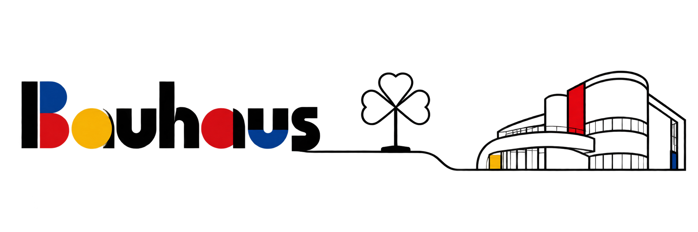
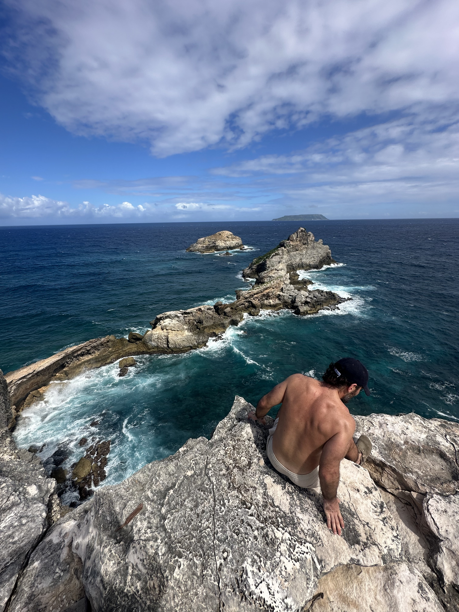
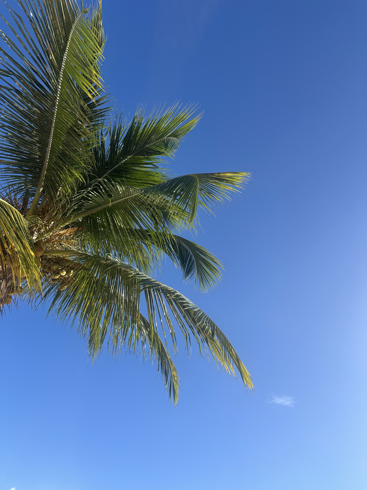
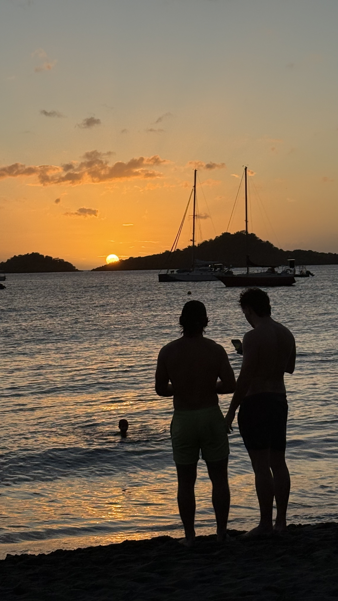

Je crois aux projets qui ont du sens.
Aux lieux qui racontent quelque chose.
Et aux rencontres qui les font naître.

J’ai l’intime conviction que nous avons tous une mission de vie.
Certains ont la chance d’exercer un métier par passion quand la majorité d’entre nous œuvre par fonction.
Je réfute le fait de définir quelqu’un par son métier. C’est, pour moi, beaucoup trop réducteur.
C’est à ce moment précis qu’intervient la mission : ce qui nous anime, ce pourquoi on est fait.
Ma mission se résume en un mot : relier.
Assurer le lien entre les gens. Connecter et faire en sorte qu’un ensemble fonctionne.





Comme un miroir personnel unique. Un reflet dans lequel j’ancre ma contemporanéité et mes complexités.